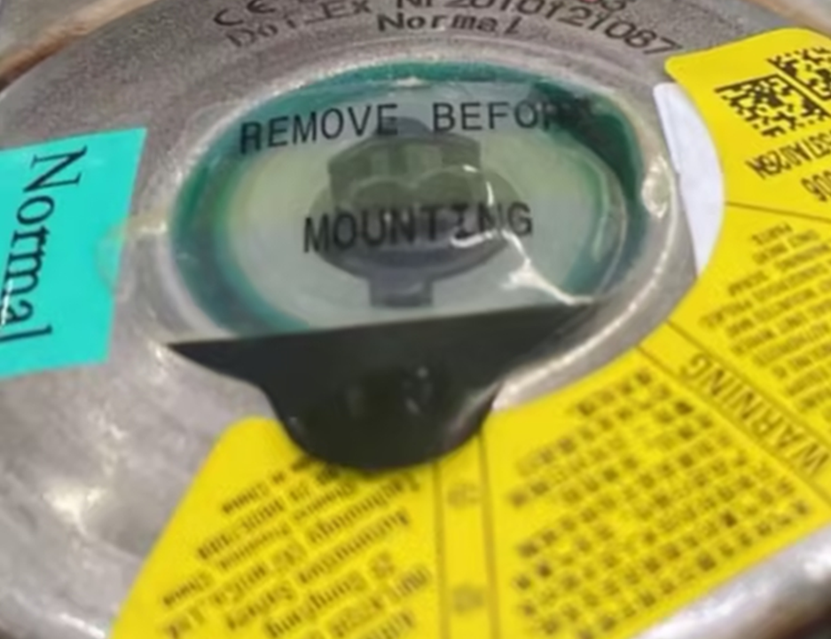
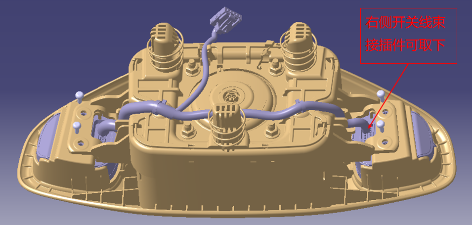
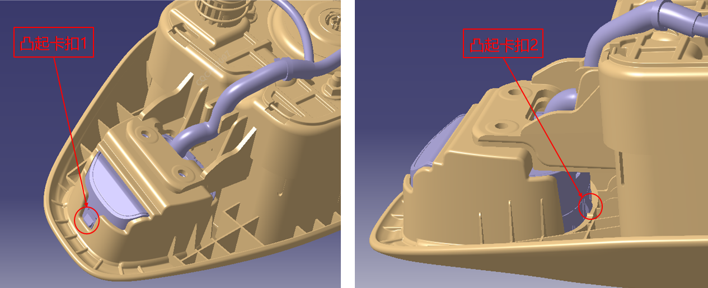
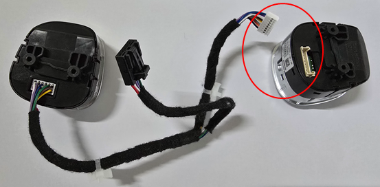
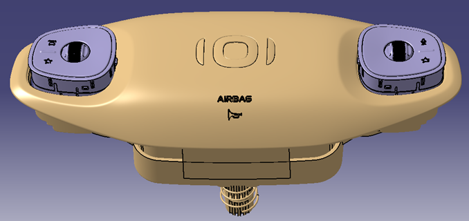
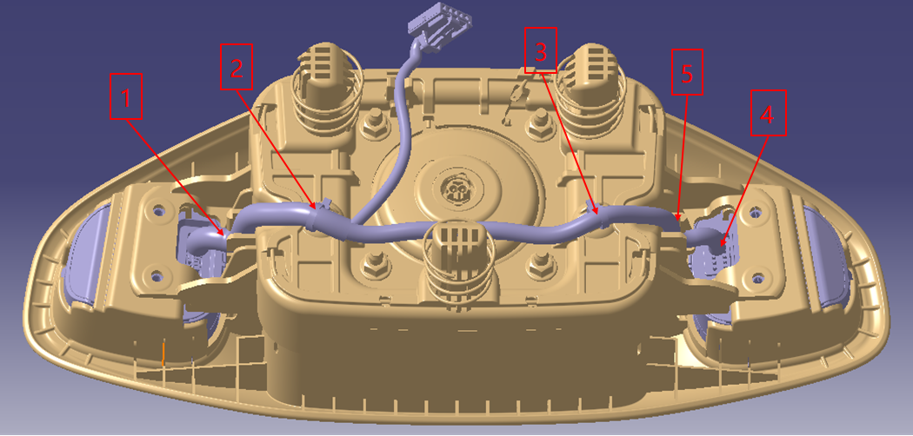
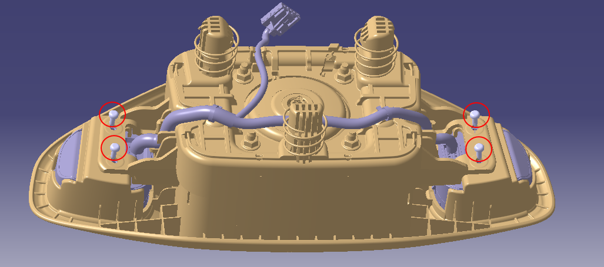

方向盘开关拆装
拆卸
-
将车辆置于静止下电状态。
-
请参见“约束系统>拆卸与安装>驾驶员正面安全气囊” 驾驶员正面安全气囊拆卸方法, 将驾驶员正面安全气囊拆卸,并取下喇叭、多功能按键、气囊等接插件。
-
维修前，先用静电膜遮蔽驾驶员正面安全气囊接插件，待维修完成后，装配接插件前再取下。

-
使用十字螺丝刀，将固定开关的4颗螺钉拆下，并将螺钉妥当保存。维修时，可铺垫绒布之类的防护，避免零件外观面碰划伤。

-
按住右侧开关（语音按键侧）线束端连接器锁止结构，向外用力，将接插件取下。（右侧开关线束接插件可取下，左侧线束无法拆卸）

-
使用一字起或卡扣起，将线束上的卡子从气囊卡孔取出。
警告
线束卡子拆卸后，需检查开关线束卡子是否完整，如发现卡子不完整或断裂到气囊卡孔，必须将驾驶员正面安全气囊与开关都更换新零件 -
使用撬板或一字起，先将开关凸起卡扣1从气囊塑料边框松脱，再将开关凸起卡扣2从气囊塑料边框松脱，当凸起卡扣脱离塑料边框时，用力向外推出开关。
同理，拆出另一侧开关。

警告
安装
-
按住右侧开关（语音按键侧）线束端连接器锁止结构，向外用力，将接插件取下。（右侧开关线束接插件可取下，左侧线束无法拆卸）

-
先将右侧开关（语音按键侧）装入驾驶员正面安全气囊右侧安装孔，卡接到位。再将左侧开关（驾驶模式按键侧）及线束装入驾驶员安全气囊左侧安装孔，卡接到位。

-
从左至右：依次将线束卡入气囊塑料卡扣中，将线束上卡子卡入气囊安装孔，然后将接插件插入右侧开关，最后将右侧线束卡入塑料卡扣。并检查确保开关接插件卡接到位、牢靠。

-
使用十字螺丝刀，用4颗螺钉将方向盘开关紧固在驾驶员正面安全气囊，螺钉安装扭矩0.65±0.1N.m。
螺钉安装完成后，使用色笔在4颗螺钉打上红色标记，并进行拍照，图片上传维修索赔系统。

警告
4颗螺钉必须全部安装，如果有螺钉遗失，不可装车使用 -
请参见“约束系统>拆卸与安装>驾驶员正面安全气囊” 驾驶员正面安全气囊的安装方法，插上驾驶员正面安全气囊接插件，多功能按键，喇叭接插件。将线束向内整理好防止被压，然后将驾驶员正面安全气囊的三个卡脚对准方向盘内的三个安装孔，用力按下。
-
晃动驾驶员正面安全气囊检查是否安装到位，喇叭是否正常，开关各个按键功能是否正常，并检查周边间隙是否均匀。